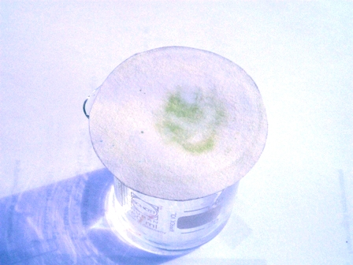
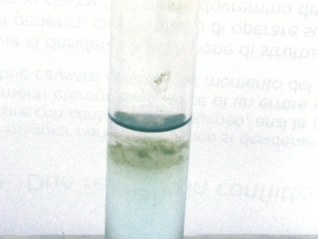

In chimica analitica tradizionale s'intende per reazione specifica una reazione (che si evidenzia in qualche modo) che avviene solo con un determinato catione o anione.
Ricordo che i cationi sono i metalli (o meglio i loro ioni in soluzione) e gli anioni i residui acidi (solfati, cloruri, nitrati, ecc.).
Quando la chimica analitica poteva contare meno di adesso di sofisticate e ultrasensibili apparecchiature per la determinazione della composizione di una sostanza incognita, l'impiego delle reazioni specifiche era abbastanza diffuso e di evidente utilità per dirimere qualche dubbio in merito ad una analisi.
Avendone l'occasione ho riprovato un vecchio metodo per la ricerca del rame per mezzo di un reattivo particolare, la benzoinossima.
Le ossime sono in chimica organica quelle sostanze che hanno attaccato da qualche parte il gruppo =N-OH, come si può vedere dalla formula del reattivo protagonista dell'esperimento di oggi.

Anche questo metodo di analisi è merito di quello spirito intraprendente di Fritz Feigl (1923, foto) del quale già ho parlato brevemente in occasione del periodato di potassio.
Materiale occorrente:
-soluzione al 5% di benzoinossima in etanolo
- soluzione diluitissima di un sale di rame
- ammoniaca
- vetreria opportuna
Ho seguito la procedura indicata qui sotto, provando il test su una soluzione contenente circa 200 mg/l di acetato di rame, pari ad una concentrazione di poco più di 50 mg/l di ioni rame.

-Mettere in un piccolo becker qualche ml di ammoniaca concentrata e coprirlo con una carta da filtro; porre al centro un paio di gocce di soluzione contenente Cu2+, lasciare che si espandano sulla carta; aggiungervi sopra un altro paio di gocce di reattivo benzoinossima.Dopo un po' apparirà un alone verde chiaro, in dipendenza della concentrazione.
Come si vede la reazione è sensibilissima.

Per visualizzare macroscopicamente il complesso verde che il reattivo forma con il rame, ho preparato una provetta con una concentrazione in rame maggiore, resa leggermente basica con ammoniaca, ed ho aggiunto lentamente, senza mescolare, circa 1 ml di reattivo: si vede bene il precipitato verde nell'interfaccia tra i due liquidi.Il metodo con la carta da filtro è comunque molto più sensibile e corretto.
Un altro reattivo interessante e molto simile che dà più o meno le stesse reazioni con il rame è la salicilaldossima, che da soluzioni debolmente acetiche forma un precipitato giallo-verde.
Avevo già detto che mi sono simpatici tutti i composti dello zolfo? No?
Allora ci sarebbe anche un terzo interesssantissimo e molto più esotico reagente, l'acido rubeanidrico o dithiooxamide (H2N-CS-CS-NH2)... ma per ora lasciamo in pace questo composto visto che la sua sintesi, nonostante la semplice formula, non è proprio fattibile.
14 commenti